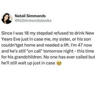

0

An anonymous reader quotes a report from Ars Technica: Last year, just before the Fourth of July holiday, the US Space Force officially took ownership of a new operating system for the GPS navigation network, raising hopes that one of the military's most troubled space programs might finally bear fruit. The GPS Next-Generation Operational Control System, or OCX, is designed for command and control of the military's constellation of more than 30 GPS satellites. It consists of software to handle new signals and jam-resistant capabilities of the latest generation of GPS satellites, GPS III, which started launching in 2018. The ground segment also includes two master control stations and upgrades to ground monitoring stations around the world, among other hardware elements.
RTX Corporation, formerly known as Raytheon, won a Pentagon contract in 2010 to develop and deliver the control system. The program was supposed to be complete in 2016 at a cost of $3.7 billion. Today, the official cost for the ground system for the GPS III satellites stands at $7.6 billion. RTX is developing an OCX augmentation projected to cost more than $400 million to support a new series of GPS IIIF satellites set to begin launching next year, bringing the total effort to $8 billion.
Although RTX delivered OCX to the Space Force last July, the ground segment remains nonoperational. Nine months later, the Pentagon may soon call it quits on the program. Thomas Ainsworth, assistant secretary of the Air Force for space acquisition and integration, told Congress last week that OCX is still struggling. The GAO found the OCX program was undermined by "poor acquisition decisions and a slow recognition of development problems." By 2016, it had blown past cost and schedule targets badly enough to trigger a Pentagon review for possible cancellation.
Officials also pointed to cybersecurity software issues, a "persistently high software development defect rate," the government's lack of software expertise, and Raytheon's "poor systems engineering" practices. Even after the military restructured the program, it kept running into delays and overruns, with Ainsworth telling lawmakers, "It's a very stressing program" and adding, "We are still considering how to ensure we move forward."
Read more of this story at Slashdot.
Samsung is reportedly planning to roll out AirDrop-style file sharing for older Galaxy phones via a Quick Share update. Early reports suggest the feature is appearing on devices from the Galaxy S22 through the S25, though it is not actually working yet. Android Central reports: As spotted by Reddit users (via Tarun Vats on X), a Quick Share app update is rolling out via the Galaxy Store on older Samsung devices that appears to add support for AirDrop file sharing with Apple devices. Users report seeing the same new "Share with Apple devices" section we first saw on Galaxy S26 devices in the Settings app after updating Quick Share.
The update is reportedly showing up on Galaxy models ranging from the Galaxy S22 to last year's Galaxy S25 series. The catch, however, is that the feature doesn't seem to be working yet. It's appearing on devices running One UI 8 as well as the One UI 8.5 beta, but enabling the toggle doesn't activate the functionality for now.
Users say that turning on the feature doesn't make their device visible to Apple devices, and no Apple devices show up in Quick Share either. It's possible Samsung or Google still needs to enable it server-side, but it does confirm that broader rollout to older Galaxy devices is coming. The feature could arrive fully with the One UI 8.5 update.
Read more of this story at Slashdot.
An anonymous reader quotes a report from TorrentFreak: In an effort to gather material for its LLM training, Meta used BitTorrent to download pirated books from Anna's Archive and other shadow libraries. According to several authors, Meta facilitated the infringement of others by "seeding" these torrents. This week, the court granted the authors permission to add these claims to their complaint, despite openly scolding their counsel for "lame excuses" and "Meta bashing." [...] The judge acknowledged that the contributory infringement claim could and should have been added back in November 2024, when the authors amended their complaint to include the distribution claim. After all, both claims arise from the same factual allegations about Meta's torrenting activity.
"The lawyers for the named plaintiffs have no excuse for neglecting to add a contributory infringement claim based on these allegations back in November 2024," Judge Chhabria wrote. The lawyers of the book authors claimed that the delay was the result of newly produced evidence that had "crystallized" their understanding of Meta's uploading activity. However, that did not impress the judge. He called it a "lame excuse" and "a bunch of doubletalk," noting that if the missing discovery truly prevented the contributory claim from being added in November 2024, the same logic would have prevented the distribution claim from being added at that time as well. "Rather than blaming Meta for producing discovery late, the plaintiffs' lawyers should have been candid with the Court, explaining that they missed an issue in a case of first impression..," the order reads.
Judge Chhabria went further, noting that the authors' law firm, Boies Schiller, showed "an ongoing pattern" of distracting from its own mistakes by attacking Meta. He pointed specifically to the dispute over when Meta disclosed its fair use defense to the distribution claim, which we covered here recently, characterizing it as a false distraction. "The lawyers for the plaintiffs seem so intent on bashing Meta that they are unable to exercise proper judgment about how to represent the interests of their clients and the proposed class members," the order reads. Despite the criticism, Chhabria granted the motion. [...] For now, the case moves forward with a fourth amended complaint, three new loan-out companies added as named plaintiffs, and a growing list of BitTorrent-related claims for Judge Chhabria to resolve.
Read more of this story at Slashdot.
For the "foreseeable future," Sony says it has stopped accepting new orders for most of its CFexpress and SD memory card lines due to the an ongoing memory supply shortage. "Due to the global shortage of semiconductors (memory) and other factors, it is anticipated that supply will not be able to meet demand for CFexpress memory cards and SD memory cards for the foreseeable future," the company said in a notice. "Therefore, we have decided to temporarily suspend the acceptance of orders from our authorized dealers and from customers at the Sony Store from March 27, 2026 onwards. PetaPixel reports: The suspension includes all of Sony's memory card lines, including CFexpress Type A, CFexpress Type B, and SD cards. The 240GB, 480GB, 960GB, and 1920GB capacity Type A cards have been suspended, as have the 480GB and 240GB Type B cards. The full gamut of Sony's high-end SD cards has also been suspended, including the 256GB, 128GB, and 64GB TOUGH-branded cards and the lower-end 512GB, 256GB, 128GB, and 256GB plainly-branded Sony cards, which cap out at V60 speeds. Even Sony's lower-end, V30 128GB and 64GB SD cards have been suspended, showcasing that the SSD shortage affects all types of solid state, not just the high-end ones.
It appears that only the 960GB CFexpress Type B card and the lowest-end SF-UZ series SD cards remain in production. However, those UHS-I SD cards are discontinued in the United States outside of a scant few retailers and resellers. "We sincerely apologize for any inconvenience this may cause our customers," Sony concludes.
Read more of this story at Slashdot.
An anonymous reader quotes a report from the BBC: Sweeping job cuts at Big Tech companies have become an annual tradition. How executives explain those decisions, however, has changed. Out are buzzwords like efficiency, over-hiring, and too many management layers. Today, all explanations stem from artificial intelligence (AI). In recent weeks, giants including Google, Amazon, Meta, as well as smaller firms such as Pinterest and Atlassian, have all announced or warned of plans to shrink their workforce, pointing to developments in AI that they say are allowing their firms to do more with fewer people. [...] But explaining cuts by pointing to advances in AI sounds better than citing cost pressures or a desire to please shareholders, says tech investor Terrence Rohan, who has had a seat on many company boards. "Pointing to AI makes a better blog post," Rohan says. "Or it at least doesn't make you seem as much the bad guy who just wants to cut people for cost-effectiveness."
That does not mean there is no substance behind the words, Rohan added. Some of the companies he's backing are using code that is 25% to 75% AI-generated. That is a sign of the real threat that AI tools for writing code represent to jobs such as software developer, computer engineer and programmer, posts once considered a near-guarantee of highly paid, stable careers. "Some of it is that the narrative is changing, some of it is that we really are starting to see step changes in productivity," Anne Hoecker, a partner at Bain who leads the consultancy's technology practice, says of the recent job cuts. "Leaders more recently are seeing these tools are good enough that you really can do the same amount of work with fundamentally less people."
There is another way that AI is driving job cuts -- and it has nothing to do with the technical abilities of coding tools and chatbots. Amazon, Meta, Google and Microsoft are collectively planning to pour $650 billion into AI in the coming year. As executives hunt for ways to try to ease investor shock at those costs, many are landing on payroll, typically tech firms' single biggest expense. [...] Although the expense of, for example, 30,000 corporate Amazon employees is dwarfed by that company's AI spending plans, firms of this size will now take any opportunity to cut costs, Rohan says. "They're playing a game of inches," Rohan says of cuts at Big Tech firms. "If you can even slightly tune the machine, that is helpful." Hoecker says cutting jobs also signals to stock market investors worried about the "real and huge" cost of AI development that executives are not blithely writing blank cheques. "It shows some discipline," says Hoecker. "Maybe laying off people isn't going to make much of a dent in that bill, but by creating a little bit of cashflow, it helps."
Read more of this story at Slashdot.
Apple's 50th anniversary is this week — and Fast Company's Harry McCracken just published an 11,000-word oral history with some fun stories from Apple's earliest days and the long and winding road to its very first home computers:
Steve Wozniak, cofounder, Apple: I told my dad when I was in high school, "I'm going to own a computer someday." My dad said, "It costs as much as a house." And I sat there at the table — I remember right where we were sitting — and I said, "I'll live in an apartment." I was going to have a computer if it was ever possible. I didn't need a house.
Woz even remembers trying to build a home computer early on with a teenaged Steve Jobs and Bill Fernandez from rejected parts procured from local electronics companies. Woz designed it — "not from anybody else's design or from a manual. And Fernandez was one of those kids that could use a soldering iron."
Bill Fernandez: The computer was very basic. It was working, and we were starting to talk about how we could hook a teletype up to it. Mrs. Wozniak called a reporter from the San Jose Mercury, and he came over with a photographer. We set up the computer on the floor of Steve Wozniak's bedroom.
Well, the core integrated circuit that ran the power supply that I built was an old reject part. We turned on the computer, and the power supply smoked and burnt out the circuitry. So we didn't get our photos in the paper with an article about the boy geniuses.
But within a few years Jobs and Wozniak both wound up with jobs at local tech companies. Atari cofounder Nolan Bushnell remembers that Steve Jobs "wasn't a good engineer, but he was a great technician. He was pristine in his ability to solder, which was actually important in those days." Meanwhile Allen Baum had shared Wozniak's high school interest in computers, and later got Woz a job working at Hewlett-Packard — where employees were allowed to use stockroom parts for private projects. ("When he needed some parts, even if we didn't have them, I could order them.") Baum helped with the Apple I and II, and joined Apple a decade later.
Wozniak remembers being inspired to build that first Apple I by the local Homebrew Computing Club, people "talking about great things that would happen to society, that we would be able to communicate like we never did [before] and educate in new ways. And being a geek would be important and have value." And once he'd built his first computer, "I wanted these people to help create the revolution. And so I passed out my designs with no copyright notices — public domain, open source, everything. A couple of other people in the club did build it."
But Woz and Jobs had even tried pitching the computer as a Hewlett-Packard product, Woz remembers:
Steve Wozniak: I showed them what it would cost and how it would work and what it could do with my little demos. They had all the engineering people and the marketing people, and they turned me down. That was the first of five turndowns from Hewlett-Packard. Steve Jobs and I had to go into business on our own.
In the end, Randy Wigginton, Apple employee No. 6 remembers witnessing Jobs, Wozniak, and Ronald Wayne the signing of Apple's founding contract, "which is pretty funny, because I was 15 at the time." And it was Allen Baum's father who gave Wozniak and Jobs the bridge loan to buy the parts they'd need for their first 500 computers.
After all the memories, the article concludes that "Trying to connect every dot between Apple, the tiny, dirt-poor 1970s startup, and Apple, the $3.7 trillion 21st-century global colossus, is impossible."
But this much is clear: The company has always been at its best when its original quirky humanity and willingness to be an outlier shine through.
Mark Johnson, Apple employee No. 13: I was in Cupertino just yesterday. It's totally different. They own Cupertino now.
Jonathan Rotenberg, who cofounded the Boston Computer Society in 1977 at age 13: People want to hate Apple, because it is big and powerful. But Apple has an underlying moral purpose that is immensely deep and expansive...
Mike Markkula, the early retiree from Intel whose guidance and money turned the garage startup into a company: The culture mattered. People were there for the right reasons — to build something transformative — not just to make money. That alignment produced extraordinary results...
Steve Wozniak: Everything you do in life should have some element of joy in it. Even your work should have an element of joy... When you're about to die, you have certain memories. And for me, it's not going to be Apple going public or Apple being huge and all that. It's really going to be stories from the period when humble people spotted something that was interesting and followed it
I'll be thinking of that when I die, along with a lot of pranks I played. The important things.
Read more of this story at Slashdot.
Yes, this week YouTube and Meta were found negligent in a landmark case about social media addiction.
But "it's still far from certain what this defeat will change," argues The Verge's senior tech and policy editor, "and what the collateral damage could be."
If these decisions survive appeal — which isn't certain — the direct outcome would be multimillion-dollar penalties. Depending on the outcome of several more "bellwether" cases in Los Angeles, a much larger group settlement could be reached down the road... For many activists, the overall goal is to make clear that lawsuits will keep piling up if companies don't change their business practices...
The best-case outcome of all this has been laid out by people like Julie Angwin, who wrote in The New York Times that companies should be pushed to change "toxic" features like infinite scrolling, beauty filters that encourage body dysmorphia, and algorithms that prioritize "shocking and crude" content. The worst-case scenario falls along the lines of a piece from Mike Masnick at Techdirt, who argued the rulings spell disaster for smaller social networks that could be sued for letting users post and see First Amendment-protected speech under a vague standard of harm. He noted that the New Mexico case hinged partly on arguing that Meta had harmed kids by providing end-to-end encryption in private messaging, creating an incentive to discontinue a feature that protects users' privacy — and indeed, Meta discontinued end-to-end encryption on Instagram earlier this month.
Blake Reid, a professor at Colorado Law, is more circumspect. "It's hard right now to forecast what's going to happen," Reid told The Verge in an interview. On Bluesky, he noted that companies will likely look for "cold, calculated" ways to avoid legal liability with the minimum possible disruption, not fundamentally rethink their business models. "There are obviously harms here and it's pretty important that the tort system clocked those harms" in the recent cases, he told The Verge. "It's just that what comes in the wake of them is less clear to me".
The article also includes this prediction from legal blogger/Section 230 export Eric Goldman. "There will be even stronger pushes to restrict or ban children from social media." Goldman argues "This hurts many subpopulations of minors, ranging from LGBTQ teens who will be isolated from communities that can help them navigate their identities to minors on the autism spectrum who can express themselves better online than they can in face-to-face conversations."
Read more of this story at Slashdot.
"It's time to charge for access," argues a new opinion piece at The Register. Begging billion-dollar companies to fund open source projects just isn't enough, writes long-time tech reporter Steven J. Vaughan-Nichols:
Screw fair. Screw asking for dimes. You can't live off one-off charity donations... Depending on what people put in a tip jar is no way to fund anything of value... [A]ccording to a 2024 Tidelift maintainer report, 60 percent of open source maintainers are unpaid, and 60 percent have quit or considered quitting, largely due to burnout and lack of compensation. Oh, and of those getting paid, only 26 percent earn more than $1,000 a year for their work. They'd be better paid asking "Would you like fries with that?" at your local McDonald's...
Some organizations do support maintainers, for example, there's HeroDevs and its $20 million Open Source Sustainability Fund. Its mission is to pay maintainers of critical, often end-of-life open source components so they can keep shipping patches without burning out. Sentry's Open Source Pledge/Fund has given hundreds of thousands of dollars per year directly to maintainers of the packages Sentry depends on. Sentry is one of the few vendors that systematically maps its dependency tree and then actually cuts checks to the people maintaining that stack, as opposed to just talking about "giving back."
Sentry is on to something. We have the Linux Foundation to manage commercial open source projects, the Apache Foundation to oversee its various open source programs, the Open Source Initiative (OSI) to coordinate open source licenses, and many more for various specific projects. It's time we had an organization with the mission of ensuring that the top programmers and maintainers of valuable open source projects get a cut of the tech billionaire pie.
We must realign how businesses work with open source so that payment is no longer an optional charitable gift but a cost of doing business. To do that, we need an organization to create a viable, supportable path from big business to individual programmer. It's time for someone to step up and make this happen. Businesses, open source software, and maintainers will all be better off for it.
One possible future... Bruce Perens wrote the original Open Source definition in 1997, and now proposes a not-for-profit corporation developing "the Post Open Collection" of software, distributing its licensing fees to developers while providing services like user support, documentation, hardware-based authentication for developers, and even help with government compliance and lobbying.
Read more of this story at Slashdot.
Microsoft is reportedly shifting Windows 11 app development back toward fully native apps. Rudy Huyn, a Partner Architect at Microsoft working on the Store and File Explorer, said in a post on X that he is building a new team to work on Windows apps. "You don't need prior experience with the platform.. what matters most is strong product thinking and a deep focus on the customer," he wrote. "If you've built great apps on any platform and care about crafting meaningful user experiences, I'd love to hear from you." Huyn later said in a reply on X that the new Windows 11 apps will be "100% native." TechSpot reports: The description stands out at a time when many of Microsoft's built-in tools, including Clipchamp and Copilot, rely on web technologies and Progressive Web App architectures. The company's commitment to native performance suggests that some long-standing frustrations around responsiveness, memory use, and interface consistency could finally be addressed.
For Windows developers, Huyn's comments hint at a change in direction. Microsoft's recent development priorities have leaned heavily on web-based approaches, with Progressive Web Apps (PWAs) replacing or supplementing many native programs. [...] Exactly which applications will be rebuilt, or how strictly "100% native" will be enforced, remains unclear. Some current Microsoft apps classified as native still depend on WebView for specific features. But the renewed emphasis already has developers paying attention.
Read more of this story at Slashdot.
fjo3 shares a report from France 24: Too many lines of code to analyze, armies of AI assistants to wrangle, and lengthy prompts to draft are among the laments by hard-core AI adopters. Consultants at Boston Consulting Group (BCG) have dubbed the phenomenon "AI brain fry," a state of mental exhaustion stemming "from the excessive use or supervision of artificial intelligence tools, pushed beyond our cognitive limits."
The rise of AI agents that tend to computer tasks on demand has put users in the position of managing smart, fast digital workers rather than having to grind through jobs themselves. "It's a brand-new kind of cognitive load," said Ben Wigler, co-founder of the start-up LoveMind AI. "You have to really babysit these models." [...] "There is a unique kind of reward hacking that can go on when you have productivity at the scale that encourages even later hours," Wigler said.
[Adam Mackintosh, a programmer for a Canadian company] recalled spending 15 consecutive hours fine-tuning around 25,000 lines of code in an application. "At the end, I felt like I couldn't code anymore," he recalled. "I could tell my dopamine was shot because I was irritable and didn't want to answer basic questions about my day."
BCG recommends in a recently published study that company leaders establish clear limits regarding employee use and supervision of AI. However, "That self-care piece is not really an America workplace value," Wigler said. "So, I am very skeptical as to whether or not its going to be healthy or even high quality in the long term." Notably, the report says everyone interviewed for the article "expressed overall positive views of AI despite the downsides." In fact, a recent BCG study actually found a decline in burnout rates when AI took over repetitive work tasks.
Read more of this story at Slashdot.
Microsoft Copilot is reportedly injecting promotional "tips" into GitHub pull requests, with Neowin claiming more than 1.5 million PRs have been affected by messages advertising integrations like Raycast, Slack, Teams, and various IDEs. From the report: According to Melbourne-based software developer Zach Manson, a team member used the AI to fix a simple typo in a pull request. Copilot did the job, but it also took the liberty of editing the PR's description to include this message: "Quickly spin up Copilot coding agent tasks from anywhere on your macOS or Windows machine with Raycast." A quick search of that phrase on GitHub shows that the same promotional text appears in over 11,000 pull requests across thousands of repositories. Even merge requests on GitLab aren't safe from the injection.
So what's happening? Well, Raycast has a Copilot extension that can do things like create pull requests from a natural language command. The ad directly names Raycast, so you might think that Raycast is injecting the promo into the PRs to market its own app. But it is more likely that Microsoft is the one doing the injecting. If you look at the raw markdown of the affected pull requests, there is a hidden HTML comment, "START COPILOT CODING AGENT TIPS" placed right just before the ad tip. This suggests Microsoft is using the comment to insert a "tip" that points back to its own developer ecosystem or partner integrations. UPDATE: Following backlash from developers, Microsoft has removed Copilot's ability to insert "tips" into pull requests. Tim Rogers, principal product manager for Copilot at GitHub, said the move was intended "to help developers learn new ways to use the agent in their workflow."
"On reflection," Rogers said he has since realized that letting Copilot make changes to PRs written by a human without their knowledge "was the wrong judgement call."
Read more of this story at Slashdot.
Their goal is to use biometric data and blockchain to build age-verification measures directly into disposable vape cartridges.
Wired reports on a partnership between vape/cartridge manufacturer Ispire Technology and regulatory consulting company Chemular (which specializes in the nicotine market) — which they've named "Ike Tech":
[Using blockchain-based security, the e-cig cartridge] would use a camera to scan some form of ID and then also take a video of the user's face. Once it verifies your identity and determines you're old enough to vape, it translates that information into anonymized tokens. That info goes to an identity service like ID.me or Clear. If approved, it bounces back to the app, which then uses a Bluetooth signal to give the vape the OK to turn on.
"Everything is tokenized," [says Ispire CEO Michael Wang]. "As a result of this process, we don't communicate consumer personal private information." He says the process takes about a minute and a half... After that onetime check, the Bluetooth connection on the phone will recognize when the vape cartridge is nearby and keep it unlocked. Move the vape too far away from the phone, and it shuts off again. Based on testing, the companies behind Ike Tech claim this process has a 100 percent success rate in age verification, more or less calling the tech infallible. "The FDA told us it's the holy grail technology they were looking for," Wang says. "That's word-for-word what they said when we met with them...."
Wang says the goal is to implement additional features in the verification process, like geo-fencing, which would force the vape to shut off while near a school or on an airplane. In the future, the plan is to license this biometric verification tech to other e-cig companies. The tech may also grow to include fingerprint readers and expand to other product categories; Wang suggests guns, which have a long history of age-verification features not quite working.
Read more of this story at Slashdot.
The Wall Street Journal reports that Rivian "just won a yearslong battle with car dealers in Washington state that threatens the model of how cars are sold."
After fighting to sell its vehicles directly to buyers, Rivian threatened to take its case to voters with a ballot measure to permit direct sales. The dealers blinked. The state's dealer lobby not only dropped its opposition to a sales loophole for Rivian and rival EV-maker Lucid, but also encouraged lawmakers to approve one. The measure became law this month...
New auto entrants like Rivian, and Tesla before it, have spent years contending with long-established U.S. state laws that require new cars to be sold through independent franchised dealers. The auto startups — typically makers of EVs — argue that they can offer a better experience by selling directly to consumers, much as Apple sells iPhones through its own stores and online. Rivian CEO RJ Scaringe has said the company is committed to direct-only sales because it's more profitable and gives the company control over how its vehicles are sold, marketed and maintained. The Washington compromise riled traditional automakers, including General Motors, Ford and Toyota, which lobbied against it, arguing it unfairly advantages startups. A trade group representing the automakers called it discriminatory and argued the exception could one day open the door to Chinese EV makers...
German automaker Volkswagen is currently facing several lawsuits from dealers over its plan to sell new Scout vehicles directly to consumers. Dealers say independent franchises are vital to the car-buying process, creating competition between dealerships that keeps prices affordable for consumers, while providing valuable services such as repairs, warranty work and financing... Yet for Washington's dealers, the prospect of putting franchise laws up for a popular vote laid bare a tough reality: given the choice, many car buyers want the freedom to avoid dealerships. Rivian's polling, which the company shared with lawmakers, showed nearly 70% of respondents favored allowing direct sales when asked whether they would support manufacturers selling cars directly to consumers...
The fight comes at a critical time for Rivian, which is launching a new, more affordable SUV in a bid to make consistent profits amid a downturn in U.S. EV sales... Rivian is able to directly sell cars in roughly half of U.S. states, but a number of them limit how many locations the company can operate. They can't disclose the price, though. For that, customers must go online.
The article notes that "Following the win, Rivian executives are eyeing other states that, like Washington, ban direct sales but also allow ballot initiatives: Arkansas, Ohio, Oklahoma, Montana, Nebraska and South Dakota..." It adds that lawmakers (from both parties) in the state of Washington had said "they have long felt pulled between giving consumers more car-buying freedom and protecting dealers, essentially small-business owners who are vital to local economies — and politically powerful."
But an executive at the Washington State Auto Dealers Association said dealers supported this new law partly because it protects them by barring future automakers from selling directly in the state, and by requiring Rivian and Lucid to adhere to the same regulations that govern how dealers operate.
Read more of this story at Slashdot.
Project Hail Mary has now grossed $300.8 million globally after earning another $54.1 million this weekend from 86 markets, reports Variety, noting that after just nine days it's now Amazon MGM's highest-grossing film ever. And last weekend it had the best opening for a "non-franchise" movie in three years, adds the Associated Press — the best since 2023's Oppenheimer:
Project Hail Mary, which cost nearly $200 million to produce... is on an enviable trajectory. Its second weekend hold was even better than that of Oppenheimer, which collected $46.7 million in its follow-up frame.
But the movie is based on a book by The Martian author Andy Weir, described by one news outlet as "a former software engineer and self-proclaimed 'lifelong space nerd'... known for his realistic and clear-eyed approach to scientifically technical stories."
Project Hail Mary has plenty of real science in it, whether it be space mathematics, physics, or astrobiology... The film's namesake project is even comprised of the space programs of other nations, such as Roscosmos from Russia, the Chinese space program, and the European Space Agency...
The story relies on work NASA has done regarding exoplanets, or planets outside our solar system... [This includes a nearby star named Tau Ceti approximately 12 light years from Earth which is orbited by four planets — two once thought to be in "the habitable zone" where liquid water can exist.] Tau Ceti has long been the setting used by sci-fi authors and storytellers. Isaac Asimov used it for his Robot series. Arthur C. Clarke's "Rama" spacecraft came across a mysterious tetrahedron in the Tau Ceti system. Authors Ursula K. Le Guin and Kim Stanley Robinson also set stories in Tau Ceti, and it also serves as the extrasolar setting of the 1968 Jane Fonda film Barbarella. Most recently, the Bungie video game Marathon is set in the far-off system, serving as part of the background story for the extraction shooter, about a large-scale plan to colonize the Tau Ceti system.
The movie also mentions 40 Eridani A, according to the article, a real star about 16 light-years away that was said to be orbited by the fictional planet Vulcan, home to Star Trek's Mr. Spock. It's also mentioned in Frank Herbert's Dune as the star system of the planets Ix and Richese ("noted for their machine culture and miniaturisation," according to the Stellar Australis site's "Project Dune" page).
And in a video on IMAX's YouTube channel, the film's directors explain how for a crucial scene they used non-visible-light photography, which is also an important part of modern astronomy. "Even the credits incorporate real astrophotography into the final moments," the article points out, using the work of award-winning Australian astrophotographer Rod Prazeres. "The only difference between his work of capturing space data in images and what ended up on the big screen was that he gave them 'starless versions' of his photographs to make it easier to place credit text over them."
Prazeres wrote on his web site that he was touched the producers "wanted the real thing... In a world where CGI and AI are everywhere, it meant a lot..."
Read more of this story at Slashdot.
OkCupid and parent company Match Group settled an FTC case dating back to 2014 over allegations that the dating app shared users' photos and other personal data with a third party without proper disclosure or opt-out rights. Engadget reports: According to the FTC, OkCupid's privacy policy at the time noted that the company wouldn't share a user's personal information with others, except for some cases including "service providers, business partners, other entities within its family of businesses." However, the lawsuit accused OkCupid of sharing three million photos of its users to Clarifai, which the FTC claims is a "unrelated third party" that didn't fall under the allowed entities. On top of that, the lawsuit alleged that OkCupid didn't inform its users of this data sharing, nor give them a chance to opt out.
Moving forward, the settlement would "permanently prohibit" Match Group, which owns OkCupid, and Humor Rainbow, which operates OkCupid, from misrepresenting what kind of personal information it collects, the purpose for collecting the data and any consumer choices to prevent data collection. Even after the 2014 incident, OkCupid was found with security flaws that could've exposed user account info but, which were quickly patched in 2020.
Read more of this story at Slashdot.
Lola Murti / CNBC : Micron shares closed down 10% on Monday and are now down 30% since Micron's blowout earnings report on March 18; Sandisk fell 7% and Western Digital dropped 9% — Micron shares plummeted 10% on Monday, continuing the memory maker's significant post-earnings sell-off.
Vaibhav Srivastav / @reach_vb : OpenAI introduces a Codex plugin for Claude Code, letting users invoke Codex from inside Claude Code to review code or delegate tasks — If you already use Claude Code, this Codex plugin gives you a simple way to pull Codex into the same workflow. It is useful for three things …
Eric Newcomer / Newcomer : Leaked January presentation: Coatue estimated that Anthropic would lose $14B in EBITDA on $18B in revenue in 2026 and reach a $1.995T valuation in 2030 — We talk about it & more on the Cerebral Valley Show — In a presentation to prospective investors in January, Coatue offered a rare look …
Qwen : Alibaba releases its Qwen3.5-Omni omnimodal LLM with support for 10+ hours of audio input, saying the Plus variant surpasses Gemini 3.1 Pro on audio benchmarks — Qwen3.5-Omni is Qwen's latest generation of fully omnimodal LLM, supporting the understanding of text, images, audio, and audio-visual content.
Katherine Bindley / Wall Street Journal : Levels.fyi: median base-salary offers for US software engineers at VC-backed startups have risen 25% to $200K since 2022; total compensation has risen just 18% — Young tech companies once might have complemented lower salaries with generous equity packages. Now they're upping base pay.
Ryan Christoffel / 9to5Mac : Gurman: Apple pulls Apple Intelligence in China, after accidentally launching it in the country; there is no imminent launch as Apple has no regulatory approval — Apple Intelligence first launched in the US in October 2024, but now after a nearly 18-month wait, Apple's AI features appear to be rolling out in China too.
Kara Scannell / CNN : Sources: US prosecutors are exploring whether some prediction market bets, including on the capture of Nicolás Maduro, violated insider trading and other laws — Federal prosecutors in Manhattan are exploring whether certain lucrative bets placed on prediction markets …
Aisha Malik / TechCrunch : Meta is testing an Instagram Plus subscription in a few countries, offering features including anonymous Story viewing and extended 48-hour Story durations — Meta has begun testing a premium subscription on Instagram in a few countries, the company confirmed to TechCrunch on Monday.
Emily Birnbaum / Bloomberg : Quinnipiac poll: 55% of Americans say AI will do more harm than good in their day-to-day lives, and 65% oppose building data centers in their community — Americans are increasingly turning against artificial intelligence, with growing majorities saying they fear the fast-moving technology …
Financial Times : Fermi shares drop 12%+ after the data center real estate company reported a $486M YTD net loss, amid concerns over a lack of a tenant for its Texas data center — Data centre property group faces investor concerns around lack of tenant revenue — Shares in data centre real estate group Fermi plunged …
Meir Orbach / CTech : Tel Aviv-based Sett, which builds AI agents to automate game marketing, raised a $30M Series B led by Greenfield Partners, bringing its total funding to $57M — The Israeli startup targets billions spent on user acquisition with agent-based automation. — Sett, which develops …
Ben Weiss / Fortune : Valinor, which aims to use smart contracts to replace manual lending processes in the private credit industry, raised a $25M seed led by Castle Island Ventures — Many corners of finance—stock exchanges, banks, and payments firms—are embracing digital assets, but the private credit industry …
Reuters : Sources: E*Trade is in talks to lead SpaceX IPO share sale to retail investors; Robinhood and SoFi have pitched for roles but SpaceX is mulling cutting them out — Morgan Stanley's E*Trade is in talks with SpaceX to take the lead in selling the rocket maker's shares to everyday U.S. investors …
Boaz Barak / Windows On Theory : State of AI safety: as capabilities grow and models can monitor other models, issues like adversarial robustness persist and society is still not ready for AI — Here is a quick overview of my intuitions on where we are with AI safety in early 2026: — So far, we continue to see exponential improvements in capabilities.
Jonathan Stempel / Reuters : Match Group agrees to settle an FTC lawsuit claiming it illegally shared user data from the OkCupid app with facial recognition tech company Clarifai in 2014 — Match Group (MTCH.O) agreed to settle a U.S. Federal Trade Commission lawsuit claiming it gave an outside company unauthorized access …
0